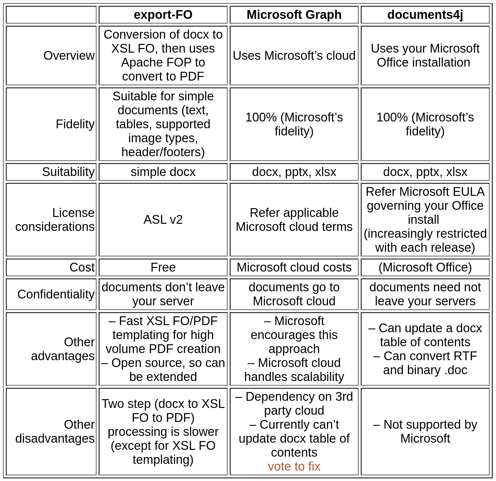
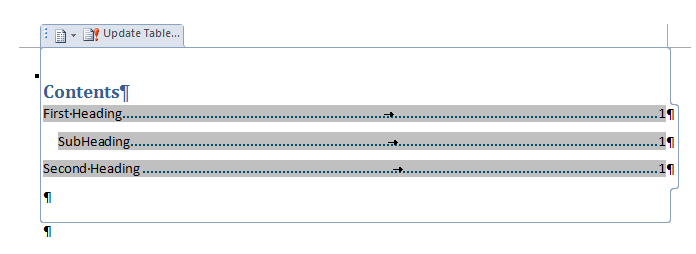

Docx4j - Getting Started
Contents
What sorts of things can you do with docx4j? 1
What Word documents does it support? 1
Handling legacy binary .doc files 1
Open an existing docx/pptx/xlsx document 1
Jaxb: marshalling and unmarshalling 1
General strategy/approach for creating stuff 1
Selecting your insertion/editing point; accessing JAXB nodes via XPath 1
docx/pptx/xlsx to PDF via Documents4j (using Word) 1
docx/pptx/xlsx to PDF via Microsoft Graph 1
Inserting/generating a TOC – "pure Java" considerations 1
Text substitution/document generation/reporting 1
Text substitution – document surface 1
Text substitution via data bound content controls 1
Binding extensions for repeats and conditionals 1
Binding escaped XHTML (XML + CSS) 1
Merging Documents and Presentations 1
Appendix 2 – Office font solutions 1
This guide is for docx4j 17.0.5 (Java 11 and later); most of it applies to 11.5.x as well.
Version numbering jumped from 11.5.14 to 17.0.0 in part because of the following API changes:
This guide is also applicable for the most part to 8.3.x which now in 2026 is considered obsolete. The 8.x series was the last series to run under Java 1.8 (hence the name)
The latest version of this document can always be found in docx4j on GitHub in /docs.
There is also a handy 1 page summary at https://www.docx4java.org/docx4j/plutext-docx4j_on_a_page-v300.pdf (look out for an update soon).
docx4j is a library for working with docx, pptx and xlsx files in Java. In essence, it can unzip a docx (or pptx/xlsx) "package", and parse the XML to create an in-memory representation in Java using developer friendly classes (as opposed to DOM or SAX).
docx4j is usually deployed as part of a web application (eg on Tomcat, JBOSS, WebSphere etc – see the deployment forums).
docx4j is similar in concept to Microsoft's OpenXML SDK, which is for .NET. docx4j.NET is available for the NET platform; see further below.
A distinctive strength of docx4j is that its in-memory representation uses JAXB, the JCP standard for Java - XML binding. Docx4j is the only library for working with OpenXML files which uses/supports JAXB (each of the Sun/Oracle, MOXy and IBM1 implementations). In contrast, Apache POI uses XML Beans. (Aspose in contrast, does not provide low-level access to the underlying XML or a corresponding object model, so "you can't do it" unless Aspose provides support for it).
docx4j is open source, available under the Apache License (v2). As an open source project, docx4j has been substantially improved by a number of contributions (see the README or POM file for contributors), and further contributions are always welcome. Please see the docx4j forum at http://www.docx4java.org/forums/ for details.
The docx4j project is sponsored by Plutext (www.plutext.com).
There is also a commercial enterprise edition of docx4j, which comes with commercial support and additional functionality not found in the community edition. Additional functionality includes:
What sorts of things can you do with docx4j?
Specific to docx4j (as opposed to pptx4j, xlsx4j):
This document focuses primarily on docx4j, but the general principles are equally applicable to pptx4j and xlsx4j.
Docx4j is for processing docx documents (and pptx presentations and xlsx spreadsheets) in Java.
It isn't for old binary (.doc) files. If you wish to invest your effort around docx (as is wise), but you also need to be able to handle old doc files, see further below for your options.
Nor is it for RTF files.
Programs based on docx4j can be converted to a Graal native image, and run "serverless" on AWS Lambda.
If you want to process docx/pptx/xslsx on the .NET platform, you should consider Microsoft's OpenXML SDK. That said, docx4j can be used in a .NET environment via IKVM, and there are several reasons you might wish to do this:
You can use docx4j.NET and the OpenXML SDK together; see InteropDocx
As on the Java platform, docx4j.NET comes in community and commercial editions.
See https://www.nuget.org/packages/docx4j.NET/
What Word documents does it support?
Docx4j can read/write docx documents created by or for Word 2007 or later, plus earlier versions which have the compatibility pack installed. (Same goes for xlsx spreadsheets and pptx presentations).
Most docx files in the wild use the so called “transitional” namespace http://schemas.openxmlformats.org/officeDocument/2006. Office 2013 introduced the option of using the “strict” namespace http://purl.oclc.org/ooxml/officeDocument; docx4j (from 11.5.9) can import these.
The relevant parts of docx4j are generated from the ECMA schemas, with the addition of the key Microsoft proprietary extensions. For unsupported extensions, docx4j gracefully degrades to the specified 2007 substitutes.
It is not really intended read/write Word 2003 XML documents, although package org.docx4j.convert.in.word2003xml is a proof of concept of importing such documents.
For more information, please see Specification versions below.
Handling legacy binary .doc files
An effective approach is to use LibreOffice or OpenOffice (via jodconverter) to convert the doc to docx, which docx4j can then process. If you need to return a binary .doc, LibreOffice or OpenOffice/jodconverter can convert the docx back to .doc.
With 8.2.0, docx4j can also convert binary .doc or RTF to docx, using Microsoft Word courtesy of documents4j. The sub-projects docx4j-documents4j-local and docx4j-documents4j-remote provide an interface to documents4j which is convenient for docx4j users.
docx4j uses JAXB to marshall and unmarshall the XML parts in a docx/pptx/xlsx.
Docx4j supports 2 major JAXB implementations:
You can also use the JAXB reference implementation (eg v2.2.4). If you want to use that in preference to the version included in the JDK, do so using the endorsed directory mechanism.
There is also:
This table shows which docx4j versions align with JAXB spec versions:
|
JAXB version |
Namespace |
Docx4j version |
|
JAXB 4.0 |
jakarta.xml.bind |
Docx4j 17.0.x Docx4j 11.5.x |
|
JAXB 3.0 |
jakarta.xml.bind |
Docx4j 11.4.x |
|
JAXB 2.x |
javax.xml.bind |
Docx4j to 11.3.2 Docx4j 8.x |
docx4j is in Maven Central. For Maven users, this makes it really easy to get going with docx4j.
As noted in the introduction, current release series are docx4j 11.5.x. and 17.x
To use docx4j 17.0.5, ensure any code references jakarta.xml.bind (not javax.xml.bind), and add one and only one of the following to your project:
<!-- use the JAXB Reference Implementation -->
<dependency>
<groupId>org.docx4j</groupId>
<artifactId>docx4j-JAXB-ReferenceImpl</artifactId>
<version>17.0.5</version>
</dependency>
<!-- use the MOXy JAXB implementation -->
<dependency>
<groupId>org.docx4j</groupId>
<artifactId>docx4j-JAXB-MOXy</artifactId>
<version>17.0.5</version>
</dependency>
The blog entry hello-maven-centrals [needs to be updated per above] shows you what to do, starting with a fresh OS (Win 7 is used, but these steps would work equally well on OSX or Linux).
If Maven is not for you, you can download the latest version of docx4j from http://www.docx4java.org/docx4j/
Supporting jars can be found in the .tar.gz or zip version, or in the relevant subdirectory.
You'll need the jars from one and only one of these directories:
To do anything with docx4j, you need slf4j on your classpath. As the slf4j website puts it:
The Simple Logging Facade for Java (SLF4J) serves as a simple facade or abstraction for various logging frameworks (e.g. java.util.logging, logback, log4j) allowing the end user to plug in the desired logging framework at deployment time.
So you need the slf4j api jar on your classpath (which Maven should do for you automatically):
<dependency>
<groupId>org.slf4j</groupId>
<artifactId>slf4j-api</artifactId>
</dependency>
For anything to be logged, you need a logging implementation. Here we assume you will use logback as your implementation:
<dependency>
<groupId> ch.qos.logback </groupId>
<artifactId> logback-classic </artifactId>
<version>${version.logback-classic}</version>
</dependency>
For docx4j v11.4 on, the version property should be:
<version.logback-classic>1.5.19</version.logback-classic>
For docx4j 8.3.8, use logback-classic 1.2.10.
A logback.xml config file may be found at https://github.com/plutext/docx4j/blob/VERSION_11_5_7/docx4j-samples-resources/src/main/resources/logback.xml. Put that on your classpath.
See for example https://github.com/plutext/docx4j/blob/master/docx4j-samples-docx4j/pom.xml#L67
Depending what you want to do, the other dependencies will be required.
Best practice is to include all dependencies on your class path, and be done with it.
In your development environment, you can do this using Maven, or by physically copying them all to your classpath.
For your deployment environment, your build process ought to be set up to do this for you.
Docx4j source is on GitHub at https://github.com/plutext/docx4j .
We accept pull requests; pull requests are presumed to be contributions under ASLv2 per our contributor agreement.
See docx4j-from-github-in-eclipse for details.
Source code can also be downloaded from Maven Central (search for docx4j at search.maven.org).
Javadoc can be downloaded from Maven Central (search for docx4j at search.maven.org), but you’ll find the source code much more useful! See above.
Get the source code from GitHub (see above), then… (you probably want to skip down to the next page, to get it working in Eclipse).
docx4j builds on Linux, macOS and Windows (from 17.0.5).
export MAVEN_OPTS=-Xmx512m
mvn install -Dgpg.skip=true
See docx4j-from-github-in-eclipse.
Not working?
Enable Maven (make sure you have Maven and its plugin installed - see Prerequisites above):
compiler version & system library:
The project should now be working in Eclipse without errors2.
Please post setup instructions in the forum, or as a wiki page on GitHub. Thanks!
Open an existing docx/pptx/xlsx document
org.docx4j.openpackaging.packages.WordprocessingMLPackage represents a docx document.
To load a document or “Flat OPC” XML file, all you have to do is:
WordprocessingMLPackage wordMLPackage =
WordprocessingMLPackage.load(new java.io.File(inputfilepath));
You can use the façade:
WordprocessingMLPackage wordMLPackage =
Docx4J.load(new java.io.File(inputfilepath));
which does the same thing under the covers.
There are similar signatures to load from an input stream.
You can then get the main document part (word/document.xml):
MainDocumentPart documentPart = wordMLPackage.getMainDocumentPart();
After that, you can manipulate its contents.
A similar approach works for pptx files:
PresentationMLPackage presentationMLPackage =
(PresentationMLPackage)OpcPackage.load(new java.io.File(inputfilepath));
And similarly for xlsx files.
To do anything much beyond this, you need to have an understanding of basic WordML concepts (or PresentationML or SpreadsheetML).
According to the Microsoft Open Packaging spec, each docx document is made up of a number of “Part” files, zipped up.
An easy way to get an understanding of this is to unzip a docx/pptx/xlsx using your favourite zip utility. Even easier is to visit http://webapp.docx4java.org and explore your file using “PartsList”. You can also generate code that way.
A Part is usually XML, but might not be (an image part, for example, isn't).
The parts form a tree. If a part has child parts, it must have a relationships part which identifies these.
The part which contains the main text of the document is the Main Document Part. Each Part has a name. The name of the Main Document Part is usually "/word/document.xml".
If the document has a header, then the main document part woud have a header child part, and this would be described in the main document part's relationships (part).
Similarly for any images. To see the structure of any given document, upload it to the PartsList webapp, or run the "Parts List" sample (see further below).
An introduction to WordML is beyond the scope of this document. You can find a very readable introduction in 1st edition Part 3 (Primer) at http://www.ecma-international.org/publications/standards/Ecma-376.htm or http://www.ecma-international.org/news/TC45_current_work/TC45_available_docs.htm (a better link for the 1st edition (Dec 2006), since its not zipped up).
See also the free "Open XML Explained" ebook by Wouter Van Vugt.
From Wikipedia:
The Office Open XML file formats were standardised between December 2006 and November 2008,
first by the Ecma International consortium (where they became ECMA-376),
and subsequently .. by the ISO/IEC's Joint Technical Committee 1 (where they became ISO/IEC 29500:2008).
The Ecma-376.htm link also contains the 2nd edition documents (of Dec 2008), which are "technically aligned with ISO/IEC 29500".
Office 2007 SP2 implements ECMA-376 1st Edition3; this is what docx4j started with
ISO/IEC 29500 (ECMA-376 2nd Edition) has Strict and Transitional conformance classes. Office 2010 supports4 transitional, and also has read only support for strict.
docx4j started with ECMA-376 1st Edition. Where appropriate later versions of the schemas are used. docx4j 3.0 uses MathML 2ed, PresentationML 2ed, and SpreadsheemML 4ed transitional.
Docx4j can open documents which contain Word 2010, 2013 specific content. The key extensions are supported. For other stuff, for example, <w14:glow w14:rad="101600"> it will look for and try to use mc:AlternateContent contained in the document. If you use docx4j to save the document, the w14:glow won’t be there any more (ie the docx will effectively be a Word 2007 docx).
Docx4j has 3 layers:
|
docx |
org.docx4j.openpackaging.packages.WordprocessingMLPackage |
|
pptx |
org.docx4j.openpackaging.packages.PresentationMLPackage |
|
xlsx |
org.docx4j.openpackaging.packages.SpreadsheetMLPackage |
and is responsible for unzipping the file into a set of objects inheriting from Part;
openpackaging also includes functionalitiy allowing parts to be added/deleted; saving the docx/pptx/xlsx etc
This layer is based originally on OpenXML4J (which is also used by Apache POI).
Most parts (including MainDocumentPart, styles, headers/footers, comments, endnotes/footnotes) use org.docx4j.wml (WordprocessingML); wml references org.docx4j.dml (DrawingML) as necessary.
These classes were generated from the Open XML schemas
Jaxb: marshalling and unmarshalling
Docx4j contains a class representing each part. For example, there is a MainDocumentPart class. XML parts inherit from JaxbXmlPart, which contains a member called jaxbElement. When you want to work with the contents of a part, you work with its jaxbElement by using the get|setContents method.
When you open a docx document using docx4j, docx4j automatically unmarshals the contents of each XML part to a strongly-type Java object tree (the jaxbElement). Actually, docx4j 3.0 is lazy; it only does this when first needed.
Similarly, if/when you tell docx4j to save these Java objects as a docx, docx4j automatically marshals the jaxbElement in each Part.
Sometimes you will want to marshal or unmarshal things yourself. The class org.docx4j.jaxb.Context defines all the JAXBContexts used in docx4j. Here is representative (non-exhaustive) content:
|
Jc |
org.docx4j.wml |
|
jcThemePart |
org.docx4j.dml |
|
jcDocPropsCore |
org.docx4j.docProps.core org.docx4j.docProps.core.dc.elements org.docx4j.docProps.core.dc.terms |
|
jcDocPropsCustom |
org.docx4j.docProps.custom |
|
jcDocPropsExtended |
org.docx4j.docProps.extended |
|
jcXmlPackage |
org.docx4j.xmlPackage |
|
jcRelationships |
org.docx4j.relationships |
|
jcCustomXmlProperties |
org.docx4j.customXmlProperties |
|
jcContentTypes |
org.docx4j.openpackaging.contenttype |
|
jcPML |
org.docx4j.pml |
You’ll find XmlUtils.marshalToString very useful as you put your code together. With this, you can easily output the content of a JAXB object, to see what XML it represents.
To get a better understanding of how docx4j works – and the structure of a docx document – you can run the PartsList sample on a docx (or a pptx or xlsx). If you do, it will list the hierarchy of parts used in that package. It will tell you which class is used to represent each part, and where that part is a JaxbXmlPart, it will also tell you what class the jaxbElement is.
So it’s a bit like unzipping the docx/pptx/xlsx file, but it tells you what Java objects are being used for each part.
|
A more fully featured tool is the PartsList online webapp. With this, you can: Alternatively, you can install the Docx4j Helper Word AddIn, to generate code from within Word. See also forum http://www.docx4java.org/forums/docx4jhelper-addin-f30/ |
You can run PartsList locally from a command line:
java -cp docx4j-3.0.1.jar:log4j-1.2.17.jar;slf4j-api-1.7.5.jar;slf4j-log4j12-1.7.5.jar
org.docx4j.samples. PartsList [input.docx]
though I always find it easier to run it from my IDE. Example output:
Part /_rels/.rels [org.docx4j.openpackaging.parts.relationships.RelationshipsPart]
containing JaxbElement:org.docx4j.relationships.Relationships
Part /docProps/app.xml [org.docx4j.openpackaging.parts.DocPropsExtendedPart]
containing JaxbElement:org.docx4j.docProps.extended.Properties
Part /docProps/core.xml [org.docx4j.openpackaging.parts.DocPropsCorePart]
containing JaxbElement:org.docx4j.docProps.core.CoreProperties
Part /word/document.xml [org.docx4j.openpackaging.parts.WordprocessingML.MainDocumentPart]
containing JaxbElement:org.docx4j.wml.Document
Part /word/settings.xml [org.docx4j.openpackaging.parts.WordprocessingML.DocumentSettingsPart]
containing JaxbElement:org.docx4j.wml.CTSettings
Part /word/styles.xml [org.docx4j.openpackaging.parts.WordprocessingML.StyleDefinitionsPart]
containing JaxbElement:org.docx4j.wml.Styles
Part /word/media/image1.jpeg [org.docx4j.openpackaging.parts.WordprocessingML.ImageJpegPart]
docx4j includes convenience methods to make it easy to access commonly used parts. These include,
on the package:
public MainDocumentPart getMainDocumentPart()
public DocPropsCorePart getDocPropsCorePart()
public DocPropsExtendedPart getDocPropsExtendedPart()
public DocPropsCustomPart getDocPropsCustomPart()
on the document part:
public StyleDefinitionsPart getStyleDefinitionsPart()
public NumberingDefinitionsPart getNumberingDefinitionsPart()
public ThemePart getThemePart()
public FontTablePart getFontTablePart()
public CommentsPart getCommentsPart()
public EndnotesPart getEndNotesPart()
public FootnotesPart getFootnotesPart()
public DocumentSettingsPart getDocumentSettingsPart()
public WebSettingsPart getWebSettingsPart()
If a part points to any other parts, it will have a relationships part listing these other parts.
RelationshipsPart rp = part.getRelationshipsPart();
You can access those, and from there, get the part you want:
for ( Relationship r : rp.getRelationships().getRelationship() ) {
log.info("\nFor Relationship Id=" + r.getId()
+ " Source is " + rp.getSourceP().getPartName()
+ ", Target is " + r.getTarget()
+ " type " + r.getType() + "\n");
Part part = rp.getPart(r);
}
That gives access to just the parts this part points to. RelationshipsPart contains various useful utility methods, for example:
/** Gets a loaded Part by its id */
public Part getPart(String id)
public Part getPart(Relationship r ) {
The RelationshipsPart is the key player when it comes to adding/removing images and other parts from your document.
There is also a list of all parts, in the package object:
Parts parts = wordMLPackage.getParts();
The Parts object encapsulates a map of parts, keyed by PartName, but you generally shouldn’t add/remove things here directly!
To add a part, see the section Adding a Part below.
The text of the document is to be found in the main document part.
Its XML will look something like:
<w:document xmlns:w="http://schemas.openxmlformats.org/wordprocessingml/2006/main" >
<w:body>
<w:p >
<w:pPr>
<w:pStyle w:val="Heading1"/>
</w:pPr>
<w:r>
<w:t>Hello World</w:t>
</w:r>
</w:p>
:
<w:sectPr >
<w:pgSz w:w="12240" w:h="15840"/>
<w:pgMar w:top="1440" w:right="1440" w:bottom="1440" w:left="1440" w:header="708" w:footer="708" w:gutter="0"/>
</w:sectPr>
</w:body>
</w:document>
Given:
WordprocessingMLPackage wordMLPackage
you can access:
MainDocumentPart documentPart = wordMLPackage.getMainDocumentPart();
Classically, you'd then do:
org.docx4j.wml.Document wmlDocumentEl
= (org.docx4j.wml.Document) documentPart.getJaxbElement();
Body body = wmlDocumentEl.getBody();
But you can skip some of that with:
/**
* Convenience method to getJaxbElement().getBody().getContent()
*/
public List<Object> getContent()
A paragraph is org.docx4j.wml.P; a paragraph is basically made up of runs of text.
@XmlRootElement(name = "p")
public class P implements Child, ContentAccessor
The ContentAccessor interface is simply:
/**
* @since 2.7
*/
public interface ContentAccessor {
public List<Object> getContent();
}
it is implemented by a number of objects, including:
|
Body |
w:body |
document body |
|
P |
w:p |
paragraph |
|
R |
w:r |
run |
|
Tbl Tr Tc |
w:tbl w:tr w:tc |
table table row table cell |
|
SdtBlock SdtRun CTSdtRow CTSdtCell |
w:sdt w:sdt w:sdt w:sdt |
content controls; see the method getSdtContent() |
As well as
Content is generally stored in a plain old Java List. So there are familiar methods for inserting content at the end of the list, or other location in it.
Read on for how to add text etc.
The modules:
contains examples of how to do things with docx4j. You can find them in the GitHub repo.
The docx4j samples include:
Basics
Navigating the document body
Output/Transformation
Import (X)HTML
Image handling
Part Handling
Document generation/document assembly using content controls
Specific docx features
Miscellaneous
Flat OPC XML
To create a new docx:
// Create the package
WordprocessingMLPackage wordMLPackage = WordprocessingMLPackage.createPackage();
// Save it
wordMLPackage.save(new java.io.File("helloworld.docx") );
That's it.
There’s a sample you can try locally from a command line:
java -cp docx4j-3.0.1.jar:log4j-1.2.17.jar;slf4j-api-1.7.5.jar;slf4j-log4j12-1.7.5.jar
org.docx4j.samples. CreateDocx [input.docx]
createPackage() is a convenience method, which does:
// Create the package
WordprocessingMLPackage wordMLPackage = new WordprocessingMLPackage();
// Create the main document part (word/document.xml)
MainDocumentPart wordDocumentPart = new MainDocumentPart();
// Create main document part content
ObjectFactory factory = Context.getWmlObjectFactory();
org.docx4j.wml.Body body = factory .createBody();
org.docx4j.wml.Document wmlDocumentEl = factory .createDocument();
wmlDocumentEl.setBody(body);
// Put the content in the part
wordDocumentPart.setJaxbElement(wmlDocumentEl);
// Add the main document part to the package relationships
// (creating it if necessary)
wmlPack.addTargetPart(wordDocumentPart);
Here is a sample short docx4j.properties file (a complete one may be copied from https://github.com/plutext/docx4j/blob/master/docx4j-samples-resources/src/main/resources/docx4j.properties ):
# Page size: use a value from org.docx4j.model.structure.PageSizePaper enum
# eg A4, LETTER
docx4j.PageSize=LETTER
# Page size: use a value from org.docx4j.model.structure.MarginsWellKnown enum
docx4j.PageMargins=NORMAL
docx4j.PageOrientationLandscape=false
# Page size: use a value from org.pptx4j.model.SlideSizesWellKnown enum
# eg A4, LETTER
pptx4j.PageSize=LETTER
pptx4j.PageOrientationLandscape=false
# These will be injected into docProps/app.xml
# if App.Write=true
docx4j.App.write=true
docx4j.Application=docx4j
docx4j.AppVersion=2.7
# of the form XX.YYYY where X and Y represent numerical values
# These will be injected into docProps/core.xml
docx4j.dc.write=true
docx4j.dc.creator.value=docx4j
docx4j.dc.lastModifiedBy.value=docx4j
#
#docx4j.McPreprocessor=true
# If you haven't configured log4j yourself
# docx4j will autoconfigure it. Set this to true to disable that
docx4j.Log4j.Configurator.disabled=false
The page size, margin & orientation values are used when new documents are created; naturally they don't affect an existing document you open with docx4j.
If no docx4j.properties file is found on your class path, docx4j has hard coded defaults.
MainDocumentPart contains a method:
public org.docx4j.wml.P addStyledParagraphOfText(String styleId, String text)
You can use that method to add a paragraph using the specified style.
The XML we are looking to create will be something like:
<w:p xmlns:w="http://schemas.openxmlformats.org/wordprocessingml/2006/main">
<w:r>
<w:t>Hello world</w:t>
</w:r>
</w:p>
addStyledParagraphOfText builds the object structure “the JAXB way”, and adds it to the document.
It is based on:
public org.docx4j.wml.P createParagraphOfText(String simpleText) {
org.docx4j.wml.ObjectFactory factory = Context.getWmlObjectFactory();
org.docx4j.wml.P para = factory.createP();
if (simpleText!=null) {
org.docx4j.wml.Text t = factory.createText();
t.setValue(simpleText);
org.docx4j.wml.R run = factory.createR();
run.getContent().add(t); // ContentAccessor
para.getContent().add(run); // ContentAccessor
}
return para;
}
Notice that the paragraph, the run, and indeed the Body, all implement the ContentAccessor interface:
/**
* @since 2.7
*/
public interface ContentAccessor {
public List<Object> getContent();
}
The add method adds the content at the end of the document. If you want to insert it somewhere else, you could use something like:
public org.docx4j.wml.P addParaAtIndex(MainDocumentPart mdp,
String simpleText, int index) {
org.docx4j.wml.ObjectFactory factory = Context.getWmlObjectFactory();
org.docx4j.wml.P para = factory.createP();
if (simpleText != null) {
org.docx4j.wml.Text t = factory.createText();
t.setValue(simpleText);
org.docx4j.wml.R run = factory.createR();
run.getContent().add(t);
para.getContent().add(run);
}
mdp.getContent().add(index, para);
return para;
}
Alternatively, you can create the paragraph by marshalling XML:
// Assuming String xml contains the XML above
org.docx4j.wml.P para = XmlUtils.unmarshalString(xml);
For this to work, you need to ensure that all namespaces are declared properly in the string.
See further below for adding images, and tables.
General strategy/approach for creating stuff
The first thing you need to know is what the XML you are trying to create looks like.
To figure this out, start with a docx that contains the construct (create it in Word if necessary).
Now look at its XML. Choices:
Now you are ready to create this XML using JAXB. There are 2 basic ways.
The classic JAXB way is to use the ObjectFactory's .createX methods. For example:
ObjectFactory factory = Context.getWmlObjectFactory();
P p = factory.createP();
The challenge with this is to know what object it is you are trying to create. To find this out, the easiest way by far is to use the PartsList online webapp. Alternatively, you could run OpenMainDocumentAndTraverse on your document, or use Eclipse to search the relevant schema (in /xsd) or source code.
Here are the names for some common objects:
|
Object |
XML element |
docx4j class |
Factory method |
|
Document body |
w:body |
org.docx4j.wml.Body |
factory.createBody(); |
|
Paragraph |
w:p |
org.docx4j.wml.P |
factory.createP() |
|
Paragraph props |
w:pPr |
org.docx4j.wml.PPr |
factory.createPPr() |
|
Run |
w:r |
org.docx4j.wml.R |
factory.createR() |
|
Run props |
w:rPr |
org.docx4j.wml.RPr |
factory.createRPr() |
|
Text |
w:t |
org.docx4j.wml.Text |
factory.createText() |
|
Table |
w:tbl |
org.docx4j.wml.Tbl |
factory.createTbl() |
|
Table row |
w:tr |
org.docx4j.wml.Tr |
factory.createTr() |
|
Table cell |
w:tc |
org.docx4j.wml.Tc |
factory.createTc() |
|
Drawing |
w:drawing |
org.docx4j.wml.Drawing |
factory.createDrawing() |
|
Page break |
w:br |
org.docx4j.wml.Br |
factory.createBr() |
|
Footnote |
? |
org.docx4j.wml.CTFtnEdnRef |
factory.createCTFtnEdnRef() |
An easier way to create stuff may be to just unmarshal the XML (eg a String representing a paragraph to be inserted into the document).
For example, given:
<w:p xmlns:w="http://schemas.openxmlformats.org/wordprocessingml/2006/main">
<w:r>
<w:t>Hello world</w:t>
</w:r>
</w:p>
you can simply:
// Assuming String xml contains the XML above
org.docx4j.wml.P para = XmlUtils.unmarshalString(xml);
The PartsList online webapp can generate appropriate code for you, using both of these approaches. It also links to the Open XML spec documentation for the element.
Alternatively, you can install the Docx4j Helper Word AddIn, to generate code from within Word. See also forum http://www.docx4java.org/forums/docx4jhelper-addin-f30/
If you need to be explicit about the type, you can use:
public static Object unmarshalString(String str, JAXBContext jc, Class declaredType)
Usually you format the appearance of things via an object’s properties element:
|
Object |
Method |
|
Paragraph |
P.getPPr() |
|
Run |
R.getRPr() |
|
Table |
Tbl.getTblPr() |
|
Table row |
Tr.getTrPr() |
|
Table cell |
Tc.getTcPr() |
In a docx, the appearance of text is basically determined by the style in the styles part which applies to it (styles can inherit from other styles), plus any direct formatting.
Docx4j contains code for working out the effective formatting, which is used in its PDF output.
In XHTML import, docx4j converts CSS into formatting properties.
org.docx4j.model.table.TblFactory provides an easy way to create a simple table. For an example of its use, see the CreateWordprocessingMLDocument sample. If you want to add content, see General strategy/approach for creating stuff above. If you want format your table (make it prettier), see Formatting Properties immediately above.
Or you can use the PartsList online webapp to generate the code.
If you are looking to fill table rows with data, consider OpenDoPE content control data binding (in which you “repeat” a table row).
Selecting your insertion/editing point;
accessing JAXB nodes via XPath
Sometimes, XPath is a succinct way to select the things you need to change.
You can use XPath to select JAXB nodes:
MainDocumentPart documentPart = wordMLPackage.getMainDocumentPart();
String xpath = "//w:p";
List<Object> list = documentPart.getJAXBNodesViaXPath(xpath, false);
These JAXB nodes are live, in the sense that if you change them, your document changes.
There are a few limitations however in the JAXB reference implementation:
If these limitations are causing you problems, try using MOXy as your JAXB implementation, or see Traversing immediately below for a different approach.
OpenMainDocumentAndTraverse.java in the samples directory shows you how to traverse the JAXB representation of a docx.
This is an alternative to XSLT, which doesn't require marshalling to a DOM document and unmarshalling again.
The sample uses TraversalUtil, which is a general approach for traversing the JAXB object tree in the main document part. It can also be applied to headers, footers etc. TraversalUtil has an interface Callback, which you use to specify how you want to traverse the nodes, and what you want to do to them.
As noted earlier, many objects (eg the document body, a paragraph, a run), have a List containing their content. Traversal works by iterating over these lists.
Traversing is a very useful approach for finding and altering parts of the document.
For example, it is used in docx4j 2.8.0, to provide a way of producing HTML output without using XSLT/Xalan.
The org.docx4j.finders package contains classes which make it convenient to find various objects.
It is often superior to using XPath (owing to the limitations in the JAXB reference implementation noted above).
Note also, in package org.docx4j.utils:
/**
* Use this if there is only a single object type (eg just P's)
* you are interested in doing something with.
public class SingleTraversalUtilVisitorCallback
ImageConvertEmbeddedToLinked sample contains an example of the use of the above.
/**
* Use this if there is more than one object type (eg Tables and Paragraphs)
* you are interested in doing something with during the traversal.
public class CompoundTraversalUtilVisitorCallback
What if you wanted to add a new styles part? Here's how:
// Create a styles part
StyleDefinitionsPart stylesPart = new StyleDefinitionsPart();
// Populate it with default styles
stylesPart.unmarshalDefaultStyles();
// Add the styles part to the main document part relationships
wordDocumentPart.addTargetPart(stylesPart);
You'd take the same approach to add a header or footer.
When you add a part this way, it is automatically added to the source part's relationships part.
Generally, you'll also need to add a reference to the part (using its relationship id) to the Main Document Part. This applies to images, headers and footers. (Comments, footnotes and endnotes are a bit different, in that what you add to the main document part are references to individual comments/footnotes/endnotes).
docx4j can convert XHTML content (paragraphs, tables, images — and, since 17.0.4, MathML, which becomes a native Word equation) into native WordML, reproducing much of the formatting.
XHTML Import functionality is a separate project on GitHub because its main dependency – Flying Saucer - is licensed under LGPL v2.1 (as opposed to ASL v2, which docx4j’s other dependencies use).
If you want this functionality, you have to add these jars to your classpath.
See the samples at https://github.com/plutext/docx4j-ImportXHTML/tree/master/src/samples
New in 17.0.4, the docx4j-markdown module converts Markdown to docx, and docx to Markdown. The import (CommonMark plus the GFM extensions: tables, task lists, real footnotes, YAML front matter) produces a real Word document – actual heading/quote/code styles and real numbering, with no HTML detour. The export includes image extraction and a tracked-changes option.
TeX math is supported in both directions: $...$ and $$...$$ translate to native OMML equations, for a published LaTeX subset (fractions, scripts, radicals, n-ary operators with limits, delimiters, matrices, aligned equations and cases, accents, and more). An equation outside the subset never disappears silently: it falls back whole to its literal source, and is reported via an issue listener. Combined with the equation support in the HTML and PDF output (see below), this makes docx4j a clean pipeline for LLM output: markdown with math in, Word/HTML/PDF with real equations out.
To use it, add docx4j-markdown to your classpath, then use the facade methods Docx4J.fromMarkdown and Docx4J.toMarkdown (or MarkdownImporter / MarkdownExporter directly, for options). See the module README for details.
If you would rather have an AI agent work with your docx files than write Java yourself, docx4j-mcp is a Model Context Protocol server which exposes docx4j’s engine to Claude Desktop, Claude Code, and any other MCP client: reading, converting (Markdown, HTML, PDF) and filling Word documents. It is developed and released separately; see https://github.com/plutext/docx4j-mcp for setup and the current tool surface.
LLMs and coding agents (Claude Code, Copilot, and similar) are good at writing docx4j code, and you should feel free to use them. Two things help: docx4j’s documentation is available in LLM-friendly form at https://www.docx4java.org/llms.txt, and the docx4j-samples-* modules give an agent working code to pattern-match against. The classic failure modes to watch for: javax.xml.bind imports (current docx4j uses jakarta.xml.bind – see the Jaxb section above), and invented APIs for merging documents (merging is a commercial extension; see Merging Documents and Presentations below).
The docx4j source tree is set up for AI-assisted development too: CLAUDE.md in the repository root (https://github.com/plutext/docx4j/blob/HEAD/CLAUDE.md) orients a coding agent – build commands, module map, architecture – and docs/developer/change-requests/ records the design history that gives an agent (or a human) context for non-trivial changes. Much of docx4j 17.0.x was built this way.
Contributions – including AI-assisted ones – are welcome. Please do submit issues (a small docx reproducing the problem is worth a thousand words) and pull requests. See CONTRIBUTING.md (https://github.com/plutext/docx4j/blob/HEAD/CONTRIBUTING.md) for the ground rules: DCO sign-off, and for AI assistance, that you have reviewed and can stand behind the code, and disclose the assistance with an Assisted-by: trailer.
And when you want to discuss something with a human: use GitHub discussions (https://github.com/plutext/docx4j/discussions) for questions and ideas, GitHub issues for bugs, or the docx4j forum at http://www.docx4java.org/forums/
docx4j can convert a docx to HTML or XHTML. You will find the generated HTML is clean (in comparison to the HTML Word produces).
Docx4j’s HTML output is suitable for documents which contain paragraphs, tables and images. From 17.0.4, equations are output as native MathML. It can’t handle more exotic features, such as SmartArt or WordArt (DrawingML or VML).
Elsewhere on the web, you’ll find XSLT which can convert docx to HTML. That XSLT is very complex, since it has to derive effective formatting from the hierarchy.
In contrast, in docx4j, that logic is implemented in Java. Because of this, docx4j’s XSLT is simple (Java XSLT extension functions do the heavy lifting).
In docx4j, you can create output using XSLT, or by traversing the document in Java. The façade lets you specify which:
//Prefer the exporter, that uses a xsl transformation
Docx4J.toHTML(htmlSettings, os, Docx4J.FLAG_EXPORT_PREFER_XSL);
//Prefer the exporter, that doesn't use a xsl transformation (= uses a visitor)
// Docx4J.toHTML(htmlSettings, os, Docx4J.FLAG_EXPORT_PREFER_NONXSL);
From 17.0.4, the visitor (non-XSLT) exporter is the default: it reached feature parity with the XSLT exporter in that release, and generates the HTML roughly an order of magnitude faster. Pass Docx4J.FLAG_EXPORT_PREFER_XSL if you want the XSLT pathway.
See the sample on GitHub at src/samples/docx4j/org/docx4j/samples/ConvertOutHtml.java
If you have output logging enabled, anything which is not implemented will be obvious in the output document. If debug level logging is not switched on, unsupported elements will be silently dropped.
docx4j facilitates 3 distinct ways to convert Microsoft Word docx documents to PDF. There are also possibilities for converting pptx or xlsx to PDF.
The three approaches:
So which should you choose? The following table covers some of the things you might want to consider:

Best results are achieved using Microsoft Graph or if Microsoft Word is available -locally or remotely - to perform the conversion. If this is the case, you can put docx4j-documents4j-local or docx4j-documents4j-remote on your classpath, and rely on Microsoft Word to do the conversion.
Note: For a period to 2019, Plutext offered a commercial PDF Converter. That product is no longer available.
The Docx4J facade can be used to convert to PDF:
public static void toPDF(WordprocessingMLPackage wmlPackage, OutputStream outputStream)
throws Docx4JException
It uses the first implementation it finds, in the following order:
The façade can't use Microsoft Graph at this time. If you want to use that, do so directly (see below).
docx/pptx/xlsx to PDF via Documents4j (using Word)
With this approach, you need Word installed, either locally or remotely.
For background, see generally https://documents4j.com/#/
For use in the context of docx4j:
Regarding TOC update, see https://www.docx4java.org/blog/2020/03/documents4j-for-toc-update/
docx/pptx/xlsx to PDF via Microsoft Graph
See generally https://github.com/plutext/java-docx-to-pdf-using-Microsoft-Graph and https://github.com/plutext/docx4j/tree/master/docx4j-samples-conversion-via-microsoft-graph/src/main/java/org/docx4j/samples/graph_convert
If Word is not available, you can generate PDF output via XSL FO using FOP. If you want to use the existing XSL FO + Apache FOP PDF Conversion, just add docx4j-export-fo (+ deps) to your classpath. If docx4j detects that they are present, it will revert to this FO based conversion.
From 17.0.4, the visitor (non-XSLT) FO exporter is likewise the default (pass Docx4J.FLAG_EXPORT_PREFER_XSL for the XSLT pathway), and equations in the docx are rendered in the PDF, via the JEuclid FOP plugin which docx4j-export-fo now includes.
PDF output via XSL FO is substantially improved in 17.0.5: line breaking, line height and placement, tab stops, paragraph spacing, list labels, tables, columns, footnotes and kerning now follow the rules Word applies, measured against Word 365. This is achieved in part by the introduction of docx4j's own FOP layout managers (in docx4j-export-fo, and on by default). The rules and the switches are documented in docx4j-export-fo/docs/word-layout-rules.md.
See the sample code at https://github.com/plutext/docx4j/tree/VERSION_11_5_14/docx4j-samples-docx-export-fo/src/main/java/org/docx4j/samples
These jars are in the zip file, in dir optional/export-fo
Bullet/symbol handling. docx4j-export-fo 11.5.7 introduced better handling of the symbols in the following fonts:
by mapping them to glyphs present in certain substitute fonts.
Docx4j 11.5.8 includes the substitute fonts in a docx4j-export-fo-fonts-symbol jar which export-fo declares as a Maven dep, so things should just work automatically.
With 11.5.7, you need to ensure your system has the following fonts installed at the OS level:
|
Document Font |
Linux |
Windows |
|
Webdings, Wingdings 1-3 |
Noto Sans Symbols 2 Regular, |
Segoe UI Symbol |
|
Symbol |
DejaVu Serif |
Segoe UI Symbol |
High volume usage.
The Apache FOP project recommends reusing a FopFactory instance when rendering multiple documents during the lifetime of a JVM.
Docx4j needs to create a font configuration for FOP on a per-document basis, not just because each docx could use differing fonts, but also because fonts can be embedded in a docx (often licensed for use with that document and its PDF output only).
Here is how to create a FopFactory for use with docx4j:
FOSettings foSettings = new FOSettings(wordMLPackage);
FopFactoryBuilder fopFactoryBuilder = FORendererApacheFOP.getFopFactoryBuilder(foSettings);
fopFactory = fopFactoryBuilder.build();
FopFactory creation is cheaper than it otherwise might be, because we specify fonts explicitly and do not let FOP auto-detect fonts (instead, that is done once by docx4j’s PhysicalFonts class).
In typical docx4j usage, the performance difference between reusing a FopFactory and creating a new one (using FOSettings) for each export is usually modest.
Reusing the FopFactory is slightly more efficient and is also consistent with the Apache FOP project’s recommendation. From docx4j 11.5.14, this is therefore the recommended approach. You should create a FopFactory as shown above when preparing to render the first document only, then re-use it. See https://github.com/plutext/docx4j/blob/VERSION_11_5_14/docx4j-samples-docx-export-fo/src/main/java/org/docx4j/samples/ManyThreads.java
When a FopFactory is reused, docx4j uses a custom PDF document handler, introduced in docx4j 11.5.14, to configure FOP fonts on a per-document basis. This avoids relying on FOP’s cached renderer configuration for font setup, while still allowing the FopFactory itself to be reused.
This custom document handler is enabled by default. You can disable it, for example if you are not reusing a FopFactory, by setting the following docx4j property:
docx4j.convert.out.fo.renderers.ConfiguredPDFDocumentHandler=false
When you add an image to a document in Word 2007, it is generally added as a new Part (ie you'll find a part in the resulting docx, containing the image in base 64 format).
When you open the document in docx4j, docx4j will create an image part representing it.
It is also possible to create a “linked” image. In this case, the image is not embedded in the docx package, but rather, is referenced at its external location.
Docx4j's BinaryPartAbstractImage class contains methods to allow you to create both embedded and linked images (along with appropriate relationships).
/**
* Create an image part from the provided byte array, attach it to the
* main document part, and return it.*/
public static BinaryPartAbstractImage createImagePart(WordprocessingMLPackage wordMLPackage,
byte[] bytes)
/**
* Create an image part from the provided byte array, attach it to the source part
* (eg the main document part, a header part etc), and return it.*/
public static BinaryPartAbstractImage createImagePart(WordprocessingMLPackage wordMLPackage,
Part sourcePart, byte[] bytes)
/**
* Create a linked image part, and attach it as a rel of the specified source part
* (eg a header part) */
public static BinaryPartAbstractImage createLinkedImagePart(
WordprocessingMLPackage wordMLPackage, Part sourcePart, String fileurl)
For an image to appear in the document, there also needs to be appropriate XML in the main document part. This XML can take 2 basic forms:
<w:p>
<w:r>
<w:drawing>
<wp:inline distT="0" distB="0" distL="0" distR="0">
<wp:extent cx="3238500" cy="2362200" />
<wp:effectExtent l="19050" t="0" r="0" b="0" />
:
<a:graphic >
<a:graphicData ..>
<pic:pic >
:
<pic:blipFill>
<a:blip r:embed="rId5" />
:
</pic:blipFill>
:
</pic:pic>
</a:graphicData>
</a:graphic>
</wp:inline>
</w:drawing>
</w:r>
</w:p>
<w:p>
<w:r>
<w:pict>
<v:shapetype id="_x0000_t75" coordsize="21600,21600" .. >
<v:stroke joinstyle="miter" />
<v:formulas>
:
</v:formulas>
:
</v:shapetype>
<v:shape .. style="width:428.25pt;height:321pt">
<v:imagedata r:id="rId4" o:title="" />
</v:shape>
</w:pict>
</w:r>
</w:p>
Docx4j can create the Word 2007 w:drawing/wp:inline form for you:
/**
* Create a <wp:inline> element suitable for this image,
* which can be linked or embedded in w:p/w:r/w:drawing.
* If the image is wider than the page, it will be scaled
* automatically. See Javadoc for other signatures.
* @param filenameHint Any text, for example the original filename
* @param altText Like HTML's alt text
* @param id1 An id unique in the document
* @param id2 Another id unique in the document
* @param link true if this is to be linked not embedded */
public Inline createImageInline(String filenameHint, String altText,
int id1, int id2, boolean link)
which you can then add to a w:r/w:drawing.
Finally, with docx4j, you can convert images from formats unsupported by Word (eg PDF), to PNG, which is a supported format. For this, docx4j uses ImageMagick. So if you want to use this feature, you need to install ImageMagick. Docx4j invokes ImageMagick using:
Process p = Runtime.getRuntime().exec("imconvert -density " + density + " -units PixelsPerInch - png:-");
Note the name imconvert, which is used so that we don't have to supply a full path to exec. You'll need to accommodate that.
Images involve three things:
This means that if you are moving images around, you need to take care to ensure that the relationships remain valid.
You can manually manipulate the relationship, and you can manually manipulate the XML referencing the relationship IDs.
Given an image part, you can get the relationship pointing to it
Relationship rel = copiedImagePart.getSourceRelationship();
String id = rel.getId();
You can then ensure the reference matches.
See the pptx4j InsertPicture sample.
See the HeaderFooter sample for how to do this.
There is a family of features the Office UI groups under “Protection Settings”. These include:
Most protection settings can be manipulated using docx4j 3.3. It contains a class ProtectionSettings:
/**
* The Protection Settings which are common across
* docx, pptx, xlsx, namely mark as final, encrypt with password,
* and digital signature. Subclasses implement the
* docx and xlsx format specific features.
*
* @author jharrop
* @since 3.3.0
*/
public abstract class ProtectionSettings
The relevant subclass is accessed via the package object:
Note: support for digital signatures is in Plutext’s Enterprise edition.
Docx4j (from v3.3.0) can generate/update a ToC, including update its page numbers.
In docx4j v8.2.0, this can be done in 2 distinct ways: (1) by automating Microsoft Word using documents4j (new in v8.2.0) or, (2) in pure Java (albeit with possible inaccuracy in the page numbers).
For the documents4j approach, please see https://github.com/plutext/docx4j/blob/VERSION_8_2_0/docx4j-samples-documents4j-local/src/main/java/org/docx4j/samples/documents4j/local/TocOperations.java
That example is for Word running locally. If you run Word remotely, please see the comments at https://github.com/plutext/docx4j/blob/VERSION_8_2_0/docx4j-documents4j-remote/src/main/java/org/docx4j/documents4j/remote/Documents4jRemoteServices.java#L61
The "pure Java" approach uses export-fo. For an example using this approach, please see https://github.com/plutext/docx4j/blob/VERSION_8_2_0/docx4j-samples-docx4j/src/main/java/org/docx4j/samples/TocSample.java
A table of contents is often included in a docx file.
Where docx4j or other code is used to modify the document, the TOC may need updating since page numbers may be wrong, or entries added, deleted or modified.
In some cases, it is sufficient to leave the TOC updating until the docx is opened in Microsoft Word. In Word, the user can manually issue the command to update the table.
In other scenarios, it is desirable to update the TOC programmatically. For example, prior to PDF output. The samples above show the 2 approaches docx4j offers for doing this.
Historically, Word has used a field code to specify a table of contents.
A table of contents field is just one type of field, amongst many:
date-and-time:
CREATEDATE | DATE | EDITTIME | PRINTDATE | SAVEDATE | TIME
document-automation:
COMPARE | DOCVARIABLE | GOTOBUTTON | IF | MACROBUTTON | PRINT
document-information:
AUTHOR | COMMENTS | DOCPROPERTY | FILENAME | FILESIZE | INFO
| KEYWORDS | LASTSAVEDBY | NUMCHARS | NUMPAGES | NUMWORDS | SUBJECT
| TEMPLATE | TITLE
equations-and-formulas:
= formula | ADVANCE | EQ | SYMBOL
index-and-tables:
INDEX | RD | TA | TC | TOA | TOC | XE
links-and-references:
AUTOTEXT | AUTOTEXTLIST | BIBLIOGRAPHY | CITATION | HYPERLINK | INCLUDEPICTURE | INCLUDETEXT
| LINK | NOTEREF | PAGEREF | QUOTE | REF | STYLEREF
mail-merge:
ADDRESSBLOCK | ASK | COMPARE | DATABASE | FILLIN | GREETINGLINE | IF
| MERGEFIELD | MERGEREC | MERGESEQ | NEXT | NEXTIF | SET | SKIPIF
numbering:
AUTONUM | AUTONUMLGL | AUTONUMOUT | BARCODE | LISTNUM | PAGE | REVNUM
| SECTION | SECTIONPAGES | SEQ
user-information:
USERADDRESS | USERINITIALS | USERNAME
form-field:
FORMCHECKBOX | FORMDROPDOWN | FORMTEXT
Since the introduction of content controls in Word 2007, Word (References > Table of Contents) inserts the TOC field in a content control:

When inserting a TOC, both approaches documented here insert it in a content control.
When updating a TOC, the pure Java approach assumes the TOC is located in such a content control. It won’t find the TOC field unless it is.
The TOC field instruction has the following components:
TOC
field-argument
switches
field-argument switches
switches field-argument
The TOC field supports a variety of field-specific-switches.
For example:
TOC \o "3-3" \h \z \t "Heading 1,1,Heading 2,2,Appendix 1,1,Appendix 2,2"
Of the switches in the Open XML specification, this TOC helper recognises:
|
\h |
Makes the table of contents entries hyperlinks. |
|
\n field-argument |
Without field-argument, omits page numbers from the table of contents. Page numbers are omitted from all levels unless a range of entry levels is specified by text in this switch's field-argument. A range is specified as for \l. |
|
\o field-argument |
Uses paragraphs formatted with all or the specified range of built-in heading styles. Headings in a style range are specified by text in this switch's field-argument using the notation specified as for \l, where each integer corresponds to the style with a style ID of HeadingX (e.g. 1 corresponds to Heading1). If no heading range is specified, all heading levels used in the document are listed. |
|
\t field-argument |
Uses paragraphs formatted with styles other than the built-in heading styles. text in this switch's field-argument specifies those styles as a set of comma-separated doublets, with each doublet being a comma-separated set of style name and table of content level. \t can be combined with \o. |
|
\u |
Uses the applied paragraph outline level. |
The following switches may also be supported in a future version:
|
\b field-argument |
Includes entries only from the portion of the document marked by the bookmark named by text in this switch's field-argument. |
|
\p field-argument |
text in this switch's field-argument specifies a sequence of characters that separate an entry and its page number. The default is a tab with leader dots. |
|
\w |
Preserves tab entries within table entries. |
|
\x |
Preserves newline characters within table entries. |
There are no plans to support the remaining switches:
|
\a field-argument |
Includes captioned items, but omits caption labels and numbers. The identifier designated by text in this switch's field-argument corresponds to the caption label. Use \c to build a table of captions with labels and numbers. |
|
\c field-argument |
Includes figures, tables, charts, and other items that are numbered by a SEQ field. The sequence identifier designated by text in this switch's field-argument, which corresponds to the caption label, shall match the identifier in the corresponding SEQ field. |
|
\d field-argument |
When used with \s, the text in this switch's field-argument defines the separator between sequence and page numbers. The default separator is a hyphen (-). |
|
\f field-argument |
Includes only those TC fields whose identifier exactly matches the text in this switch's field-argument (which is typically a letter). |
|
\l field-argument |
Includes TC fields that assign entries to one of the levels specified by text in this switch's field-argument as a range having the form startLevel-endLevel, where startLevel and endLevel are integers, and startLevel has a value equal-to or less-than endLevel. TC fields that assign entries to lower levels are skipped. |
|
\s field-argument |
For entries numbered with a SEQ field, adds a prefix to the page number. The prefix depends on the type of entry. text in this switch's field-argument shall match the identifier in the SEQ field. |
|
\z |
Hides tab leader and page numbers in Web layout view. |
Inserting/generating a TOC – "pure Java" considerations
You should ensure styles TOC1, TOC2, TOC3 etc are defined in your styles definition part, since these are used to style TOC entries. ToC Helper will fallback to hard coded defaults for these styles, if they are not defined. The hard coded defaults come from:
InputStream is = ResourceUtils.getResourceViaProperty(
"org.docx4j.toc.TocStyles.xml",
"org/docx4j/toc/TocStyles.xml");
You can specify a different resource of your own in docx4j.properties:
# Defaults to com/plutext/docx/toc/TocStyles.xml
# It provides default toc style definitions,
# for use if none are defined in the docx itself.
org.docx4j.toc.TocStyles.xml=org/docx4j/toc/TocStyles.xml
A quick way to extract the text from a docx, is to use TextUtils‘
public static void extractText(Object o, Writer w)
which marshals the object it is passed via a SAX ContentHandler, in order to output the text to the Writer.
Text substitution/document generation/reporting
There are 2 major approaches to text substitution:
This table seeks to convey the major difference between these 2 approaches:
|
|
Variable replacement on the document surface |
Content control data binding |
|
Suitability to complex documents |
Less suited, since the document surface is brittle (especially for nested repeats/conditions) |
Well suited |
|
Template setup requirement |
Edit in Microsoft Word or other docx editor |
Needs an authoring tool (typically a Word AddIn) |
Text substitution – document surface
Text substitution is easy enough, provided the string you are searching for is represented in a org.docx4j.wml.Text object in the form you expect.
However, that won't necessarily be the case. The string could be broken across text runs for any of the following reasons:
This is one reason that using data bound content controls is often a better approach (see next section).
Subject to that, you can do text substitution in a variety of ways, for example:
docx4j‘s XmlUtils also contains:
/**
* Give a string of wml containing ${key1}, ${key2}, return a suitable
* object.*/
public static Object unmarshallFromTemplate(String wmlTemplateString,
java.util.HashMap<String, String> mappings)
See the UnmarshallFromTemplate example, which operates on a string containing:
<w:p>
<w:r>
<w:t>My favourite colour is ${colour}.</w:t>
</w:r>
</w:p>
<w:p />
<w:p>
<w:r>
<w:t>My favourite ice cream is ${icecream}.</w:t>
</w:r>
</w:p>
Beyond this, you can use one of the well-know templating languages. For example, freemarker, velocity, or Spring EL.
For Spring EL, docx-stamper or office-stamper (a more recent fork of that) is a popular choice:
|
Approach |
Docx |
also Pptx, Xlsx |
|
Spring EL |
Office-stamper (v 2.9.0 requires Java 25, previously 21)
Docx-stamper (for eg Java 17) |
Office-stamper (Java 25) |
Text substitution via data bound content controls
If you have an XML file containing your own data, WordML has a mechansim for associating entries in that XML with content controls in the document.
Then, when you open the document in Word 2007, Word automatically populates the content controls with the relevant XML data, which could even be an image (or with docx4j, arbitrary XHTML). (This approach supersedes Word's legacy mail merge fields. Simple VBA for migrating a document is available at http://blogs.msdn.com/b/microsoft_office_word/archive/2007/03/28/migrating-mail-merge-fields-to-content-controls.aspx )
This works using XPath. A data-bound content control looks something like:
<w:sdt>
<w:sdtPr>
<w:dataBinding w:xpath="/root[1]/customer[1]" w:storeItemID="{428C88D8-C0E3-44F0-B5D7-F65D8B9F7EC9}" />
</w:sdtPr>
<w:sdtContent>
<w:r>
<w:rPr>
<w:rStyle w:val="PlaceholderText" />
</w:rPr>
<w:t>Click here to enter text.</w:t>
</w:r>
</w:sdtContent>
</w:sdt>
You XML file is stored as a part in the docx, typically with a path which is something like customXml/item1.xml. Note: despite the word "customXml" in the path, this functionality is not affected by the 2009 i4i patent saga.
If you have a Word document which contains data-bound content controls and your data, docx4j can fetch the data, and place it in the relevant content controls.
This is useful if you don't want to leave it to Word to do that (for example, you are creating PDFs with docx4j).
Your XML is represented using 2 parts:
CustomXmlDataStoragePart customXmlDataStoragePart
= wordMLPackage.getCustomXmlDataStorageParts().get(itemId);
CustomXmlDataStorage customXmlDataStorage
= customXmlDataStoragePart.getData();
To apply the bindings:
customXmlDataStoragePart.applyBindings(wordMLPackage.getMainDocumentPart());
See further the CustomXmlBinding sample.
From 17.0.4, bindings are applied by a non-XSLT implementation (the fastest in benchmarks; it reached feature parity in that release). To restore the previous XSLT implementation, set docx4j property docx4j.model.datastorage.BindingHandler.Implementation=BindingTraverserXSLT
If you want to create the same document 5 times, each populated with different data, obviously you'd need to insert new XML data first.
Binding extensions for repeats and conditionals
A content control is conditional if it (and its contents) are included/excluded from the document based on whether some condition is true or false.
A content control is a repeat if it designates that its contents are to be included more than once. For example, a row of a table for each invoice/order item, or person.
docx4j contains a mechanism for processing conditional content controls and repeats. See http://www.opendope.org/opendope_conventions_v2.3.html for an explanation.
See also the docx4j sample ContentControlBindingExtensions.
Binding escaped XHTML (XML + CSS)
docx4j can also take encoded XHTML and convert this to docx content. See further OpenDoPE_XHTML.docx in the docx4j docs directory.
docx4j can take docx content (stored in an XML element as escaped Flat OPC XML) and convert this to docx content.
To set up the bindings, you can use one of the Word Add-In from http://www.opendope.org/implementations.html Please note that you will need to install .NET Framework 4.0 ("full" - the "client profile" is not enough).
docx4j has quite good support for processing fields of type MERGEFIELD (ie the equivalent of doing a mailmerge operation from within Microsoft Word).
docx4j supports reading docx and pptx files which contain SmartArt.
From docx4j 2.7.0, you can also generate SmartArt.
To do this, you need:
Docx4j can be used to insert the SmartArt parts into a docx; Word or Powerpoint will then render it when the document is opened.
The code can be found in:
To clone a JAXB object, use one of the following methods in XmlUtils:
/** Clone this JAXB object, using default JAXBContext. */
public static <T> T deepCopy(T value)
/** Clone this JAXB object */
public static <T> T deepCopy(T value, JAXBContext jc)
One annoying thing about JAXB, is that an object – say a table – could be represented as org.docx4j.wml.Tbl (as you would expect). Or it might be wrapped in a javax.xml.bind.JAXBElement, in which case to get the real table, you have to do something like:
if ( ((JAXBElement)o).getDeclaredType().getName().equals("org.docx4j.wml.Tbl") )
org.docx4j.wml.Tbl tbl = (org.docx4j.wml.Tbl)((JAXBElement)o).getValue();
XmlUtils.unwrap can do this for you.
Be careful, though. If you are intend to copy an unwrapped object into your document (rather than just read it), you'll probably want the object to remain wrapped (JAXB usually wraps them for a reason; without the wrapper, you might find you need an @XmlRootElement annotation in order to be able to marshall ie save your document).
Most commonly used objects have an @XmlRootElement annotation, so they can be marshalled and unmarshalled.
In some cases, you might find this annotation is missing.
If you can't add the annotation to the jaxb source code, an alternative is to marshall it using code which is explicit about the resulting QName. For example, XmlUtils contains:
/** Marshal to a W3C document, for object
* missing an @XmlRootElement annotation. */
public static org.w3c.dom.Document marshaltoW3CDomDocument(Object o, JAXBContext jc,
String uri, String local, Class declaredType)
You could use this like so:
CTFootnotes footnotes =
wmlPackage.getMainDocumentPart().getFootnotesPart().getJaxbElement().getValue();
CTFtnEdn ftn = footnotes.getFootnote().get(1);
// No @XmlRootElement on CTFtnEdn, so ..
Document d = XmlUtils.marshaltoW3CDomDocument( ftn,
Context.jc, Namespaces.NS_WORD12, "footnote", CTFtnEdn.class );
Where the problematic object is something you're adding which isn't at the top of the tree, you should add it wrapped in a JAXBElement. For example, suppose you wanted to add FldChar fldchar. You'd create it in the ordinary way:
FldChar fldchar = factory.createFldChar();
but then what you'd actually add to r.getRunContent() is:
new JAXBElement( new QName(Namespaces.NS_WORD12, "fldChar"), FldChar.class, fldchar);
An easier way to do this is to find the appropriate method in the object factory (ie the method for creating it wrapped as a JAXBElement). Use that method signature. In this example:
@XmlElementDecl(namespace = "http://schemas.openxmlformats.org/wordprocessingml/2006/main", name = "fldChar", scope = R.class)
public JAXBElement<FldChar> createRFldChar(FldChar value) {
return new JAXBElement<FldChar>(_RFldChar_QNAME, FldChar.class, R.class, value);
}
The easiest way is to use the PartsList online webapp to generate the relevant code.
Merging Documents and Presentations
As Eric White’s blog explained, combining multiple documents can be complicated:
This programming task is complicated by the need to keep other parts of the document in sync with the data stored in paragraphs. For example, a paragraph can contain a reference to a comment in the comments part, and if there is a problem with this reference, the document is invalid. You must take care when moving / inserting / deleting paragraphs to maintain ‘referential integrity’ within the document.
Plutext’s Enterprise edition of docx4j includes “MergeDocx” code which makes merging documents as easy as invoking the method:
public WordprocessingMLPackage merge(List<WordprocessingMLPackage> wmlPkgs)
In other words, you pass a list of docx, and get a single new docx back.
To try it, visit http://webapp.docx4java.org/
The commercial edition of docx4j includes MergePptx, which you can use to concatenate presentations.
The MergeDocx extension can also be used to process a docx which is embedded as an altChunk. (Without the extension, you have to rely on Word to convert the altChunk to normal content, which means if your docx contains w:altChunk, you have to round trip it through Word, before docx4j can create a PDF or HTML out of it.)
To process the w:altChunk elements in a docx, you invoke:
public WordprocessingMLPackage process(WordprocessingMLPackage srcPackage)
You pass in a docx containg altChunks, and get a new docx back which doesn’t.
This section is most relevant for PDF output via XSL FO
docx4j can only use fonts which are available to it.
These fonts come from 3 sources:
Note that Word silently performs font substitution. When you open an existing document in Word, and select text in a particular font, the actual font you see on the screen won't be the font reported in the ribbon if it is not installed on your computer or embedded in the document. To see whether Word 2007 is substituting a font, go into Word Options > Advanced > Show Document Content and press the "Font Substitution" button.
Word's font substitution information is not available to docx4j. As a developer, you 3 options:
To embed a font in a document, open it in Word on a computer which has the font installed (check no substitution is occuring), and go to Word Options > Save > Embed Fonts in File.
If you want to tell docx4j to use a different font, you need to add a font mapping. The FontMapper interface is used to do this.
On a Windows computer, font names for installed fonts are mapped 1:1 to the corresponding physical fonts via the IdentityPlusMapper.
On a Linux computer, common Microsoft fonts are typically not available. See appendix 2 for background and solutions.
A font mapper contains Map<String, PhysicalFont>; to add a font mapping, as per the example in the ConvertOutPDF sample:
// Set up font mapper
Mapper fontMapper = new IdentityPlusMapper();
wordMLPackage.setFontMapper(fontMapper);
// Example of mapping missing font Algerian to installed font Comic Sans MS
PhysicalFont font = PhysicalFonts.get("Comic Sans MS");
fontMapper.put("Algerian", font);
You'll see the font names if you configure log4j debug level logging for org.docx4j.fonts.PhysicalFonts
To conserve resources, you can restrict to a subset of fonts installed on your system:
// Font regex (optional)
// Set regex if you want to restrict to some defined subset of fonts
// Here we have to do this before calling createContent,
// since that discovers fonts
String regex = null;
// Windows:
// String
// regex=".*(calibri|cour|arial|times|comic|georgia|impact|LSANS|pala|tahoma|trebuc|verdana|symbol|webdings|wingding).*";
// Mac
// String
// regex=".*(Courier New|Arial|Times New Roman|Comic Sans|Georgia|Impact|Lucida Console|Lucida Sans Unicode|Palatino Linotype|Tahoma|Trebuchet|Verdana|Symbol|Webdings|Wingdings|MS Sans Serif|MS Serif).*";
PhysicalFonts.setRegex(regex);
Troubleshooting
You should be able to configure things such that PDF via export-fo uses the same fonts on both Linux and Windows.
To do this, you will need to:
Notes about mapping:
You can use https://github.com/plutext/docx4j/blob/VERSION_11_5_8/docx4j-samples-docx4j/src/main/java/org/docx4j/samples/FontsUsed.java to get an understanding of what fonts are present in your docx, and how they are mapped.
Note: for characters outside the ASCII range, font selection is a complex topic. For simplicity, the FontsUsed sample does not cover those cases.
For more insight into what is happening, you can set the following loggers:
<logger name="org.docx4j.fonts.PhysicalFonts" level="DEBUG" />
<logger name="org.docx4j.fonts.RunFontSelector" level="DEBUG" />
The results of font discovery are cached at ~/.docx4j/fop-fonts.cache
In case of problems (for example, a font has previously failed to load), you can delete the cache.
Appendix 2 – Office font solutions
Over time, Microsoft has introduced different fonts with Office. These fonts are not licensed for re-distribution (although they can be embedded). In response, the industry has introduced metrically compatible subsitute fonts.
“Metrically compatible” means that the glyphs have exactly the same width and vertical metrics, so that text layout will have identical line breaks, page breaks, paragraph lengths, table widths, and pagination when rendered with either font.
The following table summarizes the situation:
|
|
Office font |
Metrically compatible |
Liberation v2 |
|
Office 95 / 97/ 2000 / XP / 2003 |
Times New Roman (inc in Core Fonts for the Web) |
||
|
Office 2007 |
Calibri |
|
[none]
|
|
Office 2013 |
|||
|
Office 2016 |
|||
|
Office 2019 |
|||
|
Microsoft 365 (mid-2023) |
Aptos |
[nothing available 2025] |
[none] |
These metrically compatible substitutes are available in the Croscore (Tinos, Arimo, Cousine), Liberation and Crosextra (Carlito, Caladea) font packages.
So for best results with PDF via export-fo on a Linux system, you should install the Croscore or Liberation fonts, and the Crosextra fonts, then use the following font mappings:
// Liberation
fontMapper.put("Times New Roman", PhysicalFonts.get("Liberation Sans"));
fontMapper.put("Arial", PhysicalFonts.get("Liberation Serif"));
fontMapper.put("Courier New", PhysicalFonts.get("Liberation Mono"));
// or:
// Croscore
fontMapper.put("Times New Roman", PhysicalFonts.get("Tinos Regular"));
fontMapper.put("Arial", PhysicalFonts.get("Arimo Regular"));
fontMapper.put("Courier New", PhysicalFonts.get("Cousine Regular"));
// Crosextra
fontMapper.put("Calibri", PhysicalFonts.get("Carlito Regular"));
fontMapper.put("Cambria", PhysicalFonts.get("Caladea Regular"));
To make the process largely automatic, from docx4j 11.5.9, these fonts are packaged in the following jars:
If you add these jars to your classpath (which Maven will do automatically), docx4j-export-fo can find them and the mappings will also be .added automatically.
1 IBM has their own proprietary JAXB implementation. By default, WebSphere uses com.ibm.xml.xlxp2.jaxb, which has the concept of fallback/ MarshallerProxy. The actual implementation it uses is in com.ibm.jaxb.tools.jar.
2 If you get the error 'Access restriction: The type is not accessible due to restriction on required library rt.jar' (perhaps using some combination of Eclipse 3.4 and/or JDK 6 update 10?), you need to go into the Build Path for the project, Libraries tab, select the JRE System Library, and add an access rule, "Accessible, **".
3 http://blogs.msdn.com/b/dmahugh/archive/2009/01/16/ecma-376-implementation-notes-for-office-2007-sp2.aspx
4 http://blogs.msdn.com/b/dmahugh/archive/2010/04/06/office-s-support-for-iso-iec-29500-strict.aspx